El inicio de la Red
Grace E. Pardo y Daniel Olazábal impulsaron una convocatoria a investigadores e investigadoras interesados en el cerebro y el comportamiento del cuidador.
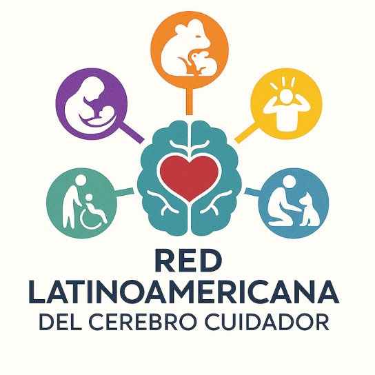
Cerebro CuidadorRED LATINOAMERICANA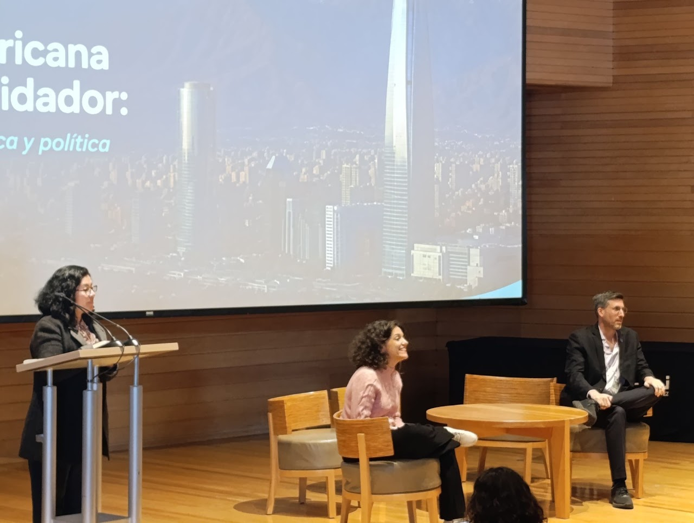
RED LATINOAMERICANA DEL CEREBRO CUIDADOR
Ciencia, colaboración y cuidado para transformar vidas
Conectamos disciplinas, personas e instituciones para comprender el cuidado desde América Latina.
RED LATINOAMERICANA DEL CEREBRO CUIDADOR · 01
Una iniciativa que conecta a quienes investigan el cuidado en América Latina.
Grace E. Pardo y Daniel Olazábal impulsaron una convocatoria a investigadores e investigadoras interesados en el cerebro y el comportamiento del cuidador.
Los encuentros virtuales permitieron conocer líneas de investigación, reconocer afinidades y construir una comunidad interdisciplinaria.
El 4 de septiembre, la Universidad Adolfo Ibáñez, sede Peñalolén, acogió el simposio inaugural en Santiago de Chile, en modalidad presencial y virtual.
RED LATINOAMERICANA DEL CEREBRO CUIDADOR · 02
Somos una comunidad interdisciplinaria que estudia las bases neuronales, psicológicas, sociales y culturales de la conducta de cuidado.
Integrar, fortalecer y promover la investigación sobre el cuidado mediante la colaboración, el intercambio de conocimientos y la articulación de enfoques en América Latina.
Consolidar una red latinoamericana de referencia, capaz de comprender las distintas formas de cuidado y generar conocimiento con impacto social y pertinencia cultural.
Reunimos aproximaciones de la psicología, las ciencias sociales, la medicina, la neurociencia y la biología, sin excluir otras visiones disciplinares ni especies.
María Josefina EscobarChile
Daniel OlazábalUruguay
Grace E. PardoPerú
La información de composición corresponde a la presentación de la Red y al informe del encuentro.
RED LATINOAMERICANA DEL CEREBRO CUIDADOR · 03
Explora los equipos de la Red por país y consulta sus instituciones y laboratorios.
Directorio inicial con información de la organización del simposio. La nómina completa de miembros y laboratorios está pendiente de confirmación.
Las fichas de este país se incorporarán cuando la Red confirme sus datos.
Las fichas de este país se incorporarán cuando la Red confirme sus datos.
Las fichas de este país se incorporarán cuando la Red confirme sus datos.
Las fichas de este país se incorporarán cuando la Red confirme sus datos.
Las fichas de este país se incorporarán cuando la Red confirme sus datos.
Las fichas de este país se incorporarán cuando la Red confirme sus datos.
Enlace del laboratorio por confirmar.
RED LATINOAMERICANA DEL CEREBRO CUIDADOR · 04
Seminarios y encuentros para compartir investigación y construir colaboración.
2025
2026
2026
03 / NUESTRO PRIMER ENCUENTRO
4 DE SEPTIEMBRE DE 2026 · SANTIAGO DE CHILE
La Universidad Adolfo Ibáñez, sede Peñalolén, fue el punto de encuentro de una comunidad interesada en comprender el cuidado desde múltiples perspectivas.
La jornada presencial y virtual reunió seis sesiones científicas y una sesión de pósteres, con ponentes de siete países latinoamericanos.
Las cifras corresponden a inscripciones, no a asistencia efectiva.
Descargar el informe completo ↓Antecedentes, objetivos y proyección de la Red Latinoamericana del Cerebro Cuidador, presentados por Daniel Olazábal.
Intervenciones con madres adolescentes, burnout parental, sensibilidad materna en contextos de adversidad y modelos de ansiedad y depresión posparto.
Adversidad materna, estrés prenatal, maternidad adolescente y desarrollo temprano desde perspectivas sociales, epigenéticas, neurofisiológicas y computacionales.
Oportunidades de aprendizaje y desarrollo infantil, con atención a los periodos fuera de los espacios educativos formales y al acompañamiento de las familias.
Condiciones biológicas, experiencias tempranas, apoyo social y salud mental, a través de estudios experimentales y en humanos.
Investigaciones de Chile, Argentina y Uruguay sobre burnout parental, adversidad temprana, organización del cuidado y desarrollo del lenguaje.
04 / MEMORIA DEL ENCUENTRO
Ideas que se comparten, conversaciones que continúan y vínculos que comienzan.
RED LATINOAMERICANA DEL CEREBRO CUIDADOR · 05
Una agenda compartida para conectar las capacidades de la región.
Los encuentros han identificado intereses comunes en cuidado perinatal, parentalidad y burnout, educación, enfermedad y discapacidad. La conformación y coordinación de grupos específicos está pendiente de publicación.
Cuidado parental, sensibilidad materna, burnout y salud mental de quienes cuidan.
Interacciones cuidador-infante, adversidad temprana, lenguaje y aprendizaje.
Estrés pre y postnatal, mecanismos neurobiológicos y modelos del cuidado.
Enfermedad, discapacidad, educación y políticas públicas de cuidado.
El catálogo de publicaciones de la Red está por completar. Mientras tanto, pueden consultarse trabajos del equipo de Grace E. Pardo en su página de investigación.
Consultar publicaciones del equipoLos seminarios ofrecen un espacio de intercambio de conocimientos entre disciplinas. Las grabaciones están disponibles en el canal de la Red.
Explorar seminarios de 2026 →La presentación de la Red plantea oportunidades para proyectos multicéntricos e interdisciplinarios y para la construcción de un mapa de capacidades metodológicas. Los proyectos específicos, sus equipos y sus cronogramas se incorporarán una vez confirmados.
Explorar grupos por país →RED LATINOAMERICANA DEL CEREBRO CUIDADOR · 06
Documentos, fotografías y grabaciones para consultar y compartir.
Grabaciones publicadas en el canal oficial. La reproducción se abre en YouTube y requiere conexión a internet.
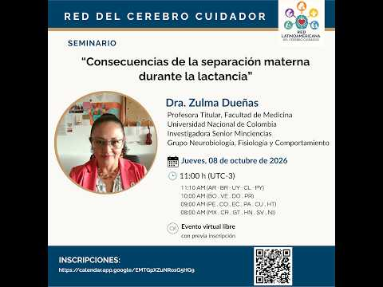
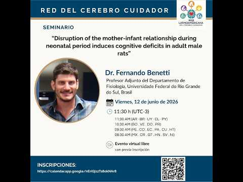
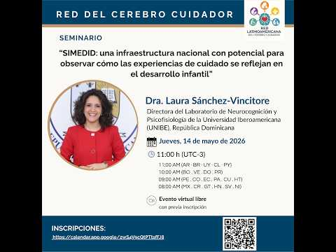

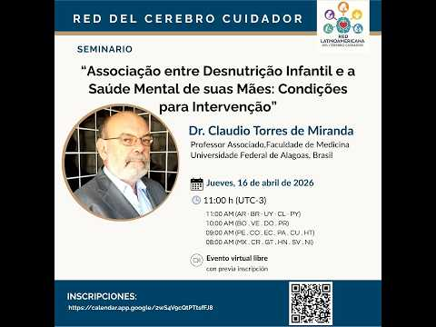
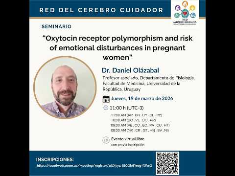
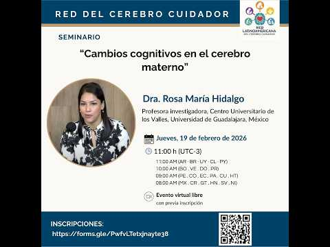
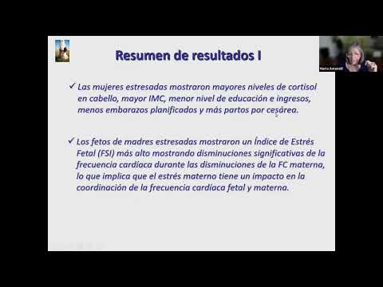
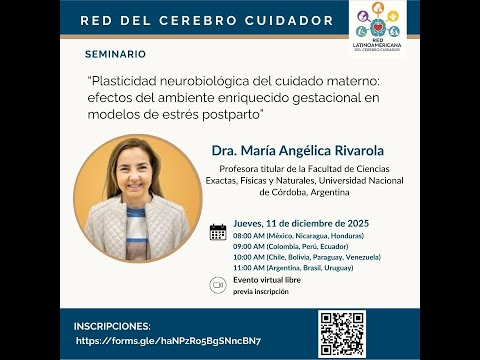
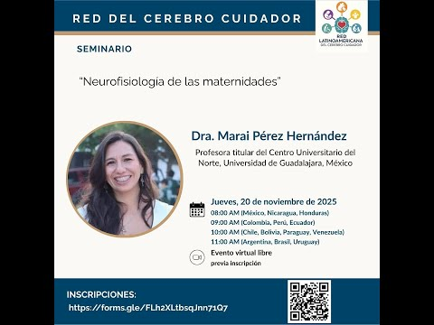
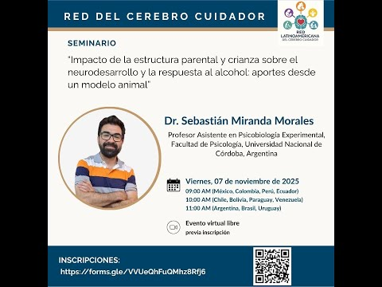
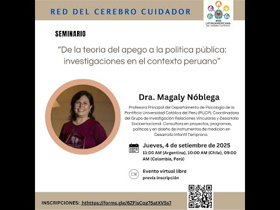
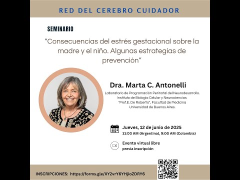
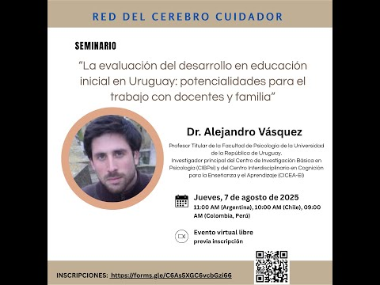
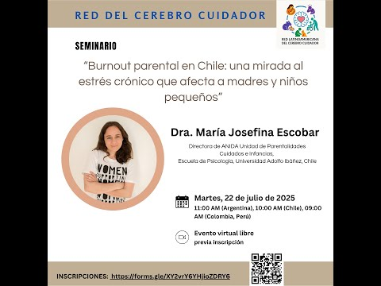
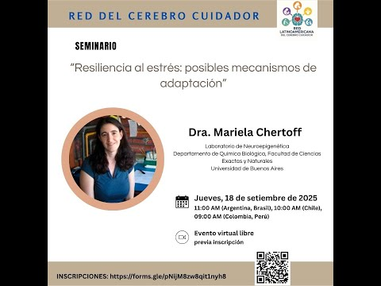
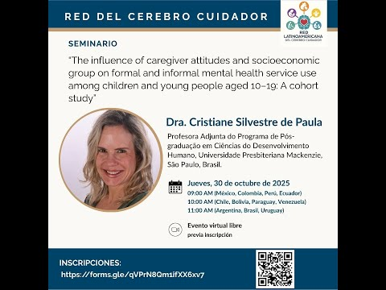
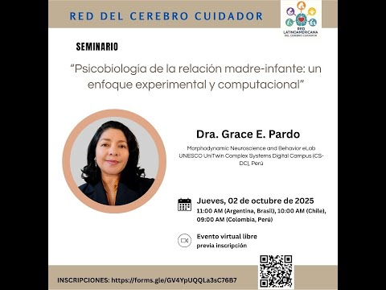
RED LATINOAMERICANA DEL CEREBRO CUIDADOR · 07
Oportunidades para colaborar, formarse y conectar equipos.
La Red plantea favorecer pasantías e intercambios entre grupos y laboratorios.
Se contempla desarrollar cursos, talleres y actividades de capacitación especializada.
Aún no hay convocatorias con fechas y requisitos publicadas en este sitio. Las novedades podrán consultarse en los canales de la Red.
RED LATINOAMERICANA DEL CEREBRO CUIDADOR · 08
Conecta con la comunidad de la Red.
Visita la página de la Red para conocer sus novedades y acceder a sus opciones de contacto.
Ir a la página de FacebookConsulta las grabaciones y sigue las nuevas publicaciones de los seminarios.
Visitar el canal de YouTubeEl correo institucional de contacto se incorporará cuando sea confirmado.